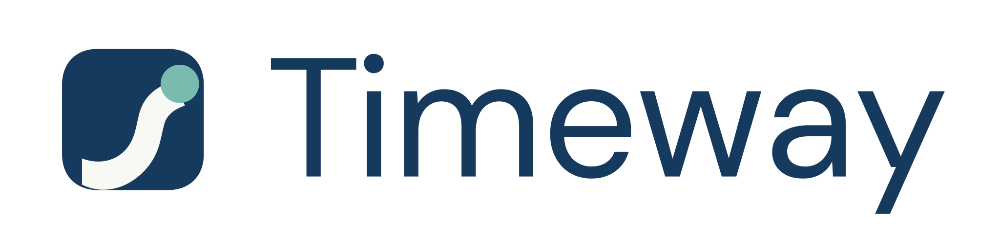

TIMEWAY / APPROVED LOGO SYSTEM
BRAND v1
PRIMARY

For white and Paper surfaces
REVERSE

For Ink surfaces
APP & FAVICON
The same compact mark supports product navigation, browser tabs, and social avatars.
MONOCHROME
Use only where production requires one colour.